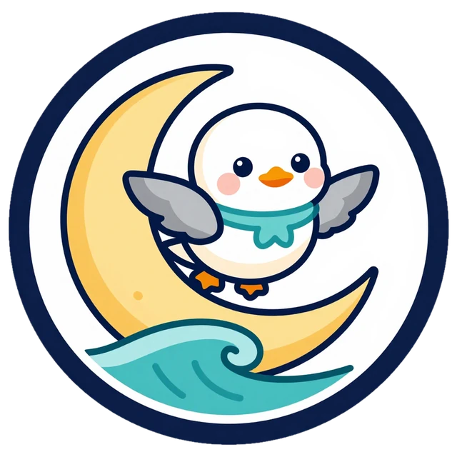
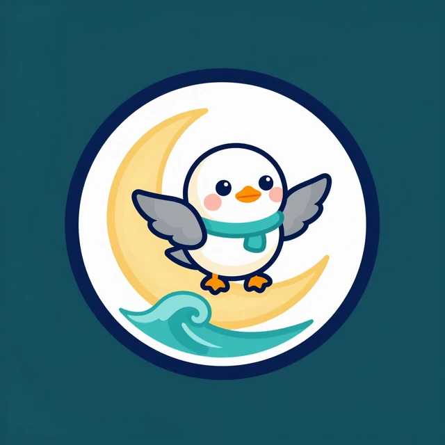
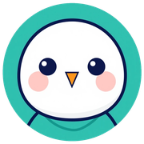
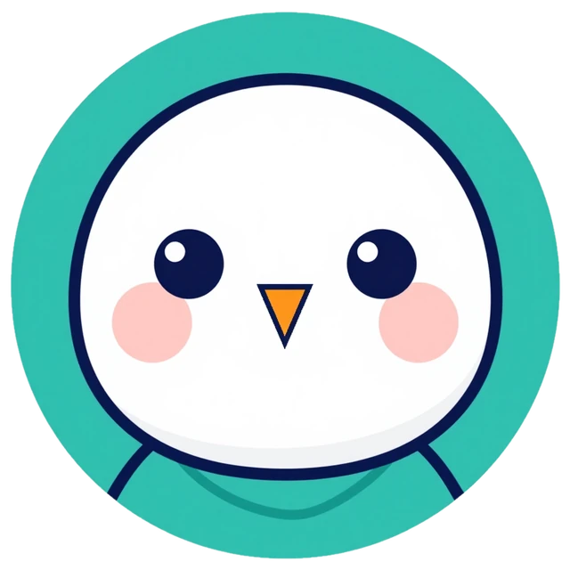
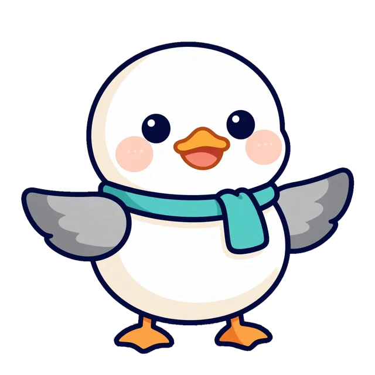
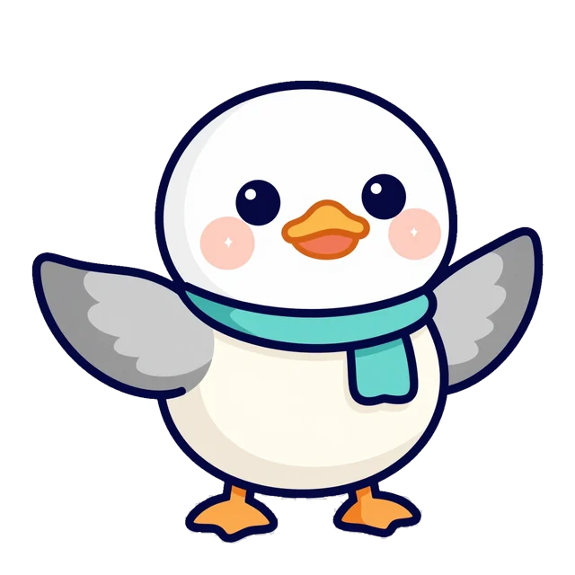
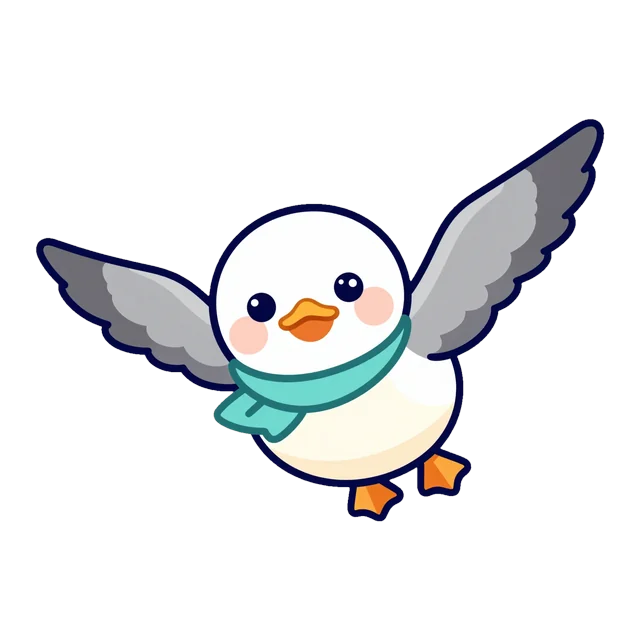
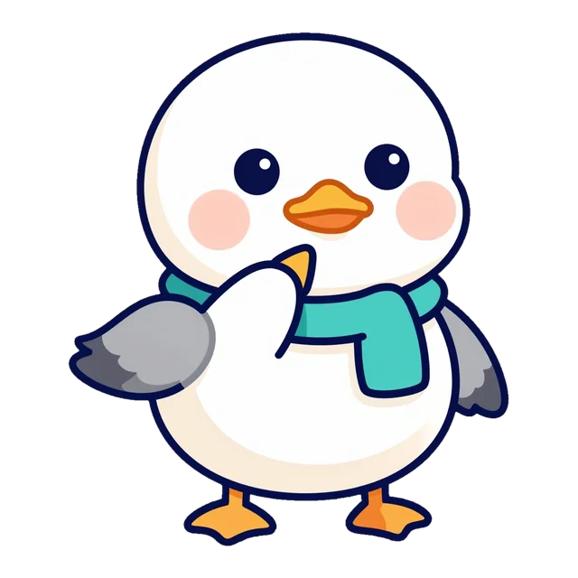
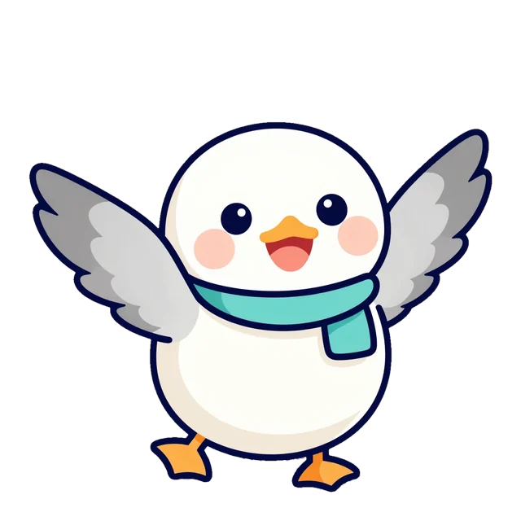
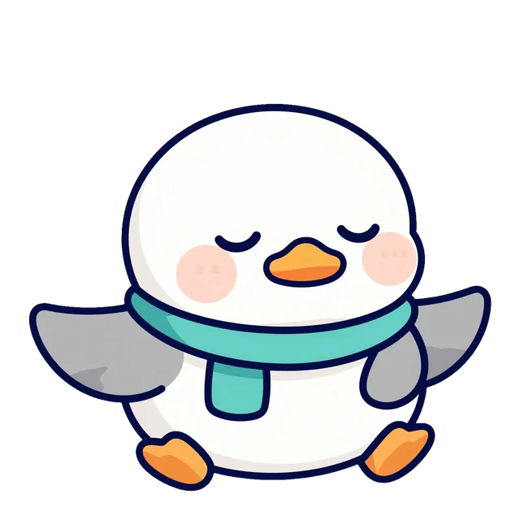

عَلَى خَلْفِيَّةٍ فَاتِحَةٍ
On light — the main badge (logos/img/v2/c1-m.webp)
نَوْرَسمَدْرَسَةُ نَوْرَس لِلْفُصْحَىNawras Fusha School · San Diego
شِعَارٌ وَاحِدٌ، وَأَلْوَانٌ وَاحِدَةٌ، وَخُطُوطٌ وَاحِدَةٌ فِي كُلِّ مَكَانٍ: الْمَوْقِعِ وَالْكُتُبِ وَالْعُرُوضِ.
The team's recommendation in one page: logo concept 1 Gull & Crescent as the school's sign, concept 6 Noori's face as the app icon, and the flagship Pacific theme. Use it for the website, the books, the decks, signs and print.


«نَوْرَس» يُكْتَبُ بِخَطٍّ حَقِيقِيٍّ، وَلَا يُرْسَمُ فِي صُورَةٍ.
Baloo Bhaijaan 2, ExtraBold 800, letter-spacing 0, colour --ink on light and --bg on dark. The full name «مَدْرَسَةُ نَوْرَس لِلْفُصْحَى» sits under it in Noto Naskh Arabic 600, --brand-text; the English line in Baloo Bhaijaan 2. Always typeset, never generated; the badge itself never carries text.
Keep x = ¼ of the badge's height empty on every side of the lockup (dashed line): no text, edge or picture inside it.
Badge: at least 40 px on screen, 15 mm in print. Below that, use the app icon. Wordmark: at least 22 px (8 mm tall in print).


The face is the small form of the badge: the same Noori, the same teal scarf. Use it wherever the badge would be smaller than 40 px. Print uses the vector logos/svg/hilal-badge.svg.
Ratios read: on --bg / on --surface (white) / on --surface2 (sea foam). Every colour on a page is a token — no hex in page CSS.
Every word a child reads or learns is set in Naskh with full tashkeel and a line height of at least 1.9 so the harakat never touch the line above.
Headings, buttons, menus and the wordmark. Round and friendly; never used for a word that is being taught.
English lines are small (about 0.82 of the Arabic), in --ink2, and isolated as left-to-right islands inside the right-to-left page.





